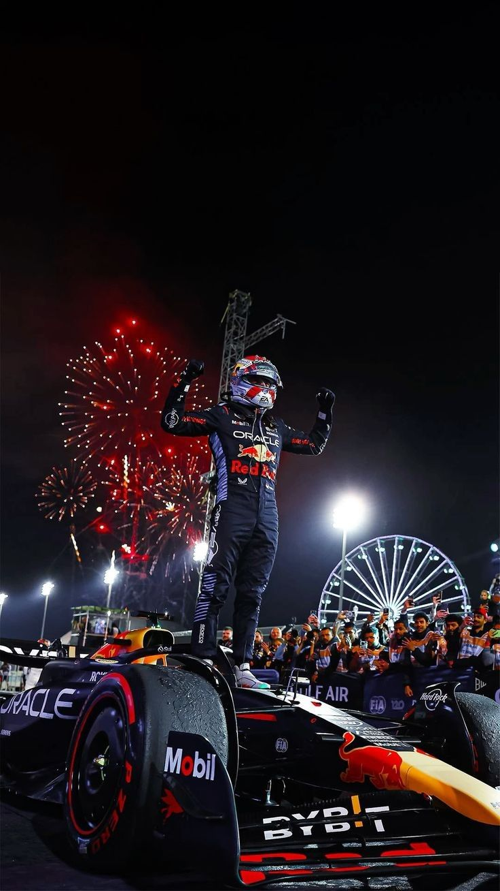
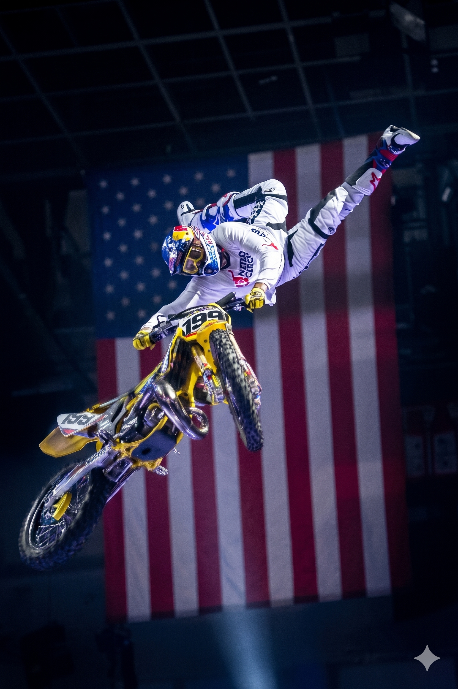

Max Verstappen
Abu Dabi – 2023
En la odisea de 2023, Max Verstappen dejó de conducir para dictar la ley de la velocidad. Hombre y máquina se fundieron en un solo pulso de acero, aniquilando cualquier esperanza ajena con una frialdad quirúrgica. En su cenit, reclamó un trono histórico donde el cronómetro fue el único juez capaz de seguir su estela.

Travis Pastrana
X Games 12.ª – 2006
En el aire de Los Ángeles 2006, Travis Pastrana dejó de saltar para empezar a levitar. Su cuerpo, reconstruido como un hombre de acero bajo el peso de incontables placas y tornillos, es el mapa de una guerra eterna contra lo imposible. Su grandeza se selló al aterrizar el primer Double Backflip de la historia, demostrando que cuando el metal se funde con la voluntad, las cicatrices no son marcas de dolor, sino los cimientos de una leyenda indestructible.